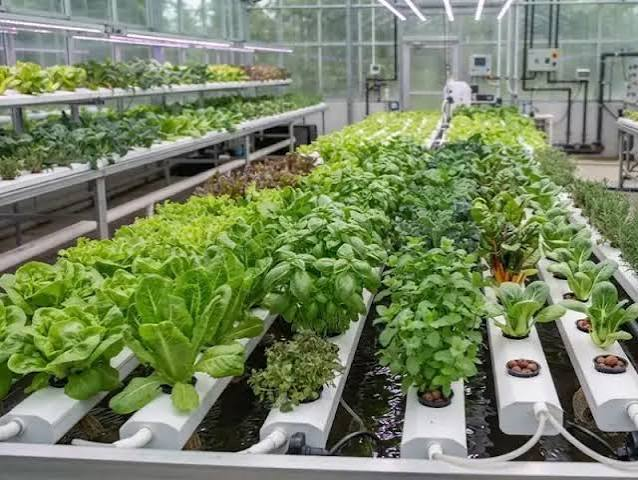

Sayuran segar tumbuh dari air, bukan dari tanah.
Hidroponik menanam tanaman langsung di larutan nutrisi. Cocok untuk balkon, teras, atau atap rumah yang sempit.

Dari benih sampai panen dalam empat langkah
Urutan dasarnya sama untuk hampir semua sayuran daun.
-
Semai benih
Letakkan benih di rockwool basah dan simpan di tempat teduh sampai berkecambah.
-
Pindah tanam
Saat muncul 2–3 helai daun, pindahkan bibit bersama rockwool ke net pot di instalasi.
-
Beri nutrisi
Larutkan nutrisi AB mix di air, lalu cek pH dan kepekatannya secara berkala.
-
Panen
Selada umumnya siap dipanen sekitar 30–45 hari setelah semai. Panen seluruh rumpun atau petik daunnya.
Kenapa banyak orang beralih ke hidroponik
- Hemat lahan
- Tanaman bisa disusun bertingkat atau di pipa vertikal, jadi satu dinding pun cukup.
- Hemat air
- Larutan nutrisi bersirkulasi dan dipakai ulang, sehingga air yang terbuang lebih sedikit.
- Lebih bersih
- Tanpa tanah, hama dan penyakit dari tanah jauh berkurang, dan sayur lebih mudah dicuci.
- Nutrisi terkontrol
- Anda menentukan takaran nutrisi, sehingga pertumbuhan lebih mudah diatur dan diprediksi.
Pilih sistem sesuai ruang dan anggaran
Pemula biasanya mulai dari sumbu atau DWC, lalu naik ke NFT.
| Sistem | Cara kerja | Cocok untuk |
|---|---|---|
| Sumbu (Wick) | Sumbu menyerap nutrisi dari wadah ke media tanam. Tanpa pompa dan listrik. | Pemula, tanaman kecil |
| DWC | Akar terendam larutan nutrisi yang diberi gelembung udara dari aerator. | Selada, pakcoy, kangkung |
| NFT | Lapisan tipis nutrisi mengalir terus di pipa atau talang yang dimiringkan. | Sayuran daun, skala lebih besar |
| Tetes (Drip) | Nutrisi diteteskan ke media tanam di sekitar akar secara berkala. | Tomat, cabai, melon |
Tanaman yang mudah dicoba
Mulai dari sayuran daun karena tumbuh cepat dan perawatannya ringan.
- Selada
- Pakcoy
- Kangkung
- Bayam
- Sawi
- Seledri
- Tomat
- Cabai
- Stroberi
Perlengkapan untuk memulai
Semuanya mudah dicari di toko pertanian atau toko daring.
- Wadah, pipa, atau talang sebagai tempat larutan nutrisi
- Net pot dan rockwool untuk menopang bibit
- Nutrisi AB mix khusus hidroponik
- pH meter dan TDS/EC meter
- Pompa air atau aerator untuk sistem NFT dan DWC
- Lokasi dengan sinar matahari langsung beberapa jam per hari
Pertanyaan yang sering muncul
Apakah hidroponik butuh listrik?
Tergantung sistemnya. Sistem sumbu tidak memerlukan listrik. NFT dan DWC memakai pompa atau aerator, jadi butuh listrik dalam jumlah kecil.
Apakah sayur hidroponik aman dimakan?
Aman jika Anda memakai air bersih dan takaran nutrisi sesuai petunjuk. Cuci sayur seperti biasa sebelum dimakan.
Berapa sering larutan nutrisi diganti?
Cek pH dan kepekatan nutrisi setiap hari atau dua hari sekali. Ganti larutan secara berkala, biasanya tiap satu sampai dua minggu, atau sesuai anjuran produk nutrisi Anda.
Tanam selada pertama Anda minggu ini.
Siapkan wadah, rockwool, dan nutrisi. Sisanya bisa dipelajari sambil jalan.
Lihat perlengkapan